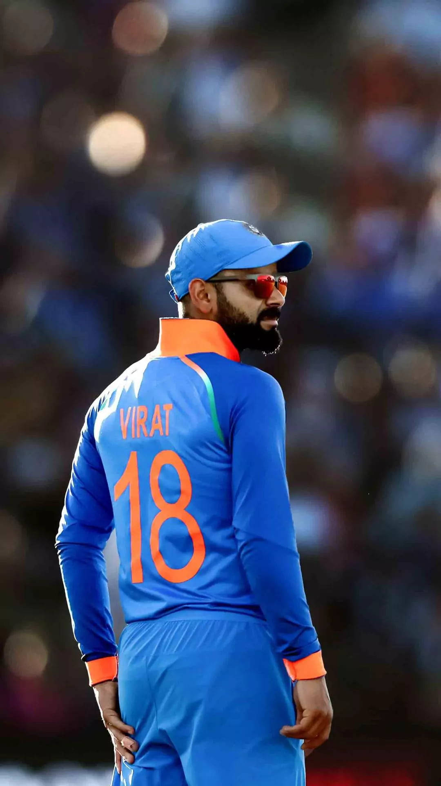

Indian Cricket Player

born on 5 November 1988
In Delhi in to Punjabi Hindu family.
His father, Prem Nath Kohli, worked as a criminal lawyer, and his mother, Saroj Kohli, served as a housewife. He has an older brother, Vikas, and an older sister, Bhawna.